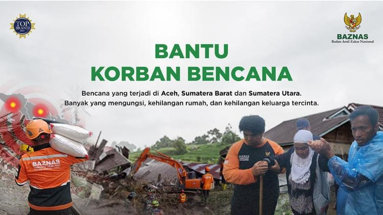

Bantuan Korban Bencana Alam Sumatera
Tentang Kampanye Ini
Di penghujung tahun ini, Indonesia kembali diuji dengan bencana alam yang melanda Aceh, Sumatera Utara, dan Sumatera Barat. Ribuan saudara kita kehilangan rumah, akses kehidupan terputus, dan terpaksa bertahan di pengungsian dengan segala keterbatasan. Di tengah duka, mereka masih berjuang untuk bangkit dan bertahan.
Merespons kondisi darurat ini, BAZNAS melalui Tim BAZNAS Tanggap Bencana (BTB) terus bergerak di lapangan. Mulai dari evakuasi warga, penyaluran bantuan darurat, penyediaan makanan dan air bersih, layanan kesehatan, hingga dukungan logistik bagi para penyintas—semua dilakukan untuk memastikan kebutuhan paling mendesak dapat terpenuhi dan harapan tetap menyala.
Namun, upaya ini tidak dapat berjalan sendiri. Kini saatnya kita hadir bersama. Bantuanmu, sekecil apa pun, sangat berarti bagi keluarga yang sedang berjuang memulihkan kehidupan mereka. Donasi yang dititipkan akan disalurkan untuk kebutuhan darurat seperti makanan siap saji, air bersih, selimut, obat-obatan, layanan kesehatan, serta proses evakuasi dan pemulihan.
Mari langitkan doa dan ringankan beban saudara-saudara kita yang terdampak bencana dengan menunaikan zakat, infak, dan sedekah melalui BAZNAS.